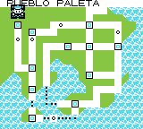

AreaDexES/Y:011
Alternative map locations (Generation I) | Alternative Route 104 map | Battle Park (Platinum) | Generation II Safari Zone | Haunted House | Jubilife Condominiums floors 3 and 4 | Map 0x0B (Generation I) | Map 0x6F (Generation I) | Mystery Zone | Record Corner (FireRed/LeafGreen) | R/S Flower Shop (Festa 2002 demo) | Special (location) | Special Area | Sevii Islands 8 and 9 | Unused Olivine City house | Unused Sunyshore City house | Unused Celadon City house
Please note that this glitch only exists in the Spanish version of the game.
|
| Town Map name: PUEBLO PALETA  Identifier (HEX) 0B Identifier (DEC) 11 Default track Viridian City Tileset Unknown Size Unknown Map type Descent glitch map, Redirection glitch map, key area
|
Map 0x0B in Spanish Yellow is a descent glitch map and redirection glitch map with an index number of 0x0B (dec:11). Its name on the Town Map is "PUEBLO PALETA"; the same name of Pallet Town in this version, and is located at Town Map coordinates 0,0; which is at the top-left corner of the screen, above Indigo Plateau.
Upon entering map 0x0B by changing D369 (indoor exit destination) to 0B, Red may continuously walk down in a glitch world with an 'Underground Path' tileset and with the Viridian City music playing with his sprite changed to that of a Youngster.
The map script for this map is taken from pointer $CC5B in WRAM. Later, the game may freeze after Red walks down for a while, otherwise warp the player to Map 0xFF if the data is safe.